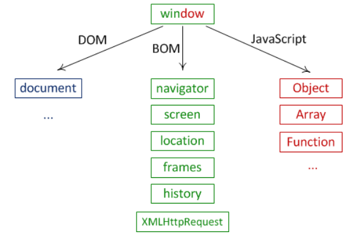
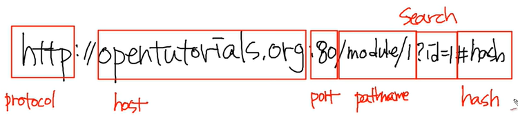

<!DOCTYPE html>
<html lang="en">

<head>
    <meta charset="UTF-8">
    <meta name="viewport" content="width=device-width, initial-scale=1.0">
    <meta http-equiv="X-UA-Compatible" content="ie=edge">
    <title>나와 컴퓨터</title>

    <link rel="stylesheet" href="https://cdnjs.cloudflare.com/ajax/libs/meyer-reset/2.0/reset.css">
    <link rel="stylesheet" href="../../design-control/css/tamplet.css">

    <style>
        .first_title>li {
            font-size: 14px;
        }

        .second_title>li {
            font-size: 12px;
            text-indent: 5px;
            font-weight: bold;
        }

        .third_title>li {
            font-size: 10px;
            text-indent: 10px;
        }

        .fourth_title>li {
            font-size: 8px;
            text-indent: 15px;
        }

        .fifth {
            font-size: 8px;
            margin-left: 20px;
        }

        .small{
            margin: 0;
            width: 200px;
        }

        .medium{
            margin: 0;
            width: 400px;
        }

        .large{
            margin: 0;
            width: 600px;
        }
        .huge{
            margin:0;
            width: 800px;
        }
        .extra_huge{
            margin: 0;
            width: 1000px;
        }
    </style>
</head>

<body>
</body>

</html>

<!DOCTYPE html>
<html>

<head>
    <meta charset="utf-8">
    <title></title>
</head>

<body>
    <div class="container">
        <header>
            <h1>WEB</h1>
        </header>
        <section class="content">
            <nav>
                <li>Ⅰ. 웹 서버 프로그램</li>
                <ul>
                    <li>Apache</li>
                    <li>Nginx</li>
                    <li>IIS</li>

                </ul>
                <li>Ⅱ. 웹 프로그래밍</li>
                <ul>
                    <li>프론트엔드</li>
                    <ul>
                        <li>html</li>
                        <li>css</li>
                        <li>javascript</li>
                    </ul>
                    <li>백엔드</li>

                    <ul>
                        <li>Node.js</li>
                        <li>PHP</li>
                        <li>JSP</li>
                        <li>ASP</li>
                        <li>ASP.NET</li>
                        <li>python - django, flask</li>
                    </ul>
        
                </ul>
                <li>Ⅲ. 데이터베이스</li>
                <ul>
                    <li>MySQL</li>
                    <li>MS SQL</li>
                    <li>Oracle</li>
                    <li>MongoDB</li>
                    <li>Casandra</li>
                    <li>HBase</li>
                </ul>
               
                
            </nav>
            <main>
                <h1>Ⅰ. 웹 서버 프로그램</h1>
                <p>
                    Apache, Nginx는 리눅스 기반이고, IIS는 윈도우에서만 가능하다.
                </p>
                <h2>1. Apache</h2>
                <p>
                    prefork MPM. 프로세스 전체를 복제해서 안정적이다.
                </p>

                <h2>2. Nginx</h2>
                <p>
                    event driven 방식이다. 요청을 이벤트로 처리한다. apache보다 더 가볍다.
                </p>

                <h2>3. IIS</h2>


                <h1>Ⅱ. 웹 프로그래밍</h1>
                <p>
                    프론트엔드에서 request를 날리면, 백엔드에서 response를 해준다.
                </p>
                <h2>프론트엔드</h2>
                <h3>html</h3>
                <h4>form 태그</h4>
                <p>
                    속성<br>
                    action : 주소값이 들어감.<br>
                    method : GET, POST
                </p>

                <h3>css</h3>
                <p>

                </p>

                <h3>javascript</h3>
                <p>
                    브라우저에서 문서를 제어하는 것을 DOM이라고 한다.<br>
                    object화 되어야 javascript로 그 객체들을 제어가 가능하다.<br>
                    document라는 객체는 .getelementID 같은 메서드를 가지고 있는 것이다.<br>
                    var x = document.getelementID 라고 하면<br>
                    x에는 배열이 담긴다.<br>
                </p>
                
                <h4>window라는 객체</h4>
                <p>
                    window라는 객체는 전역객체이고, window가 가지고 있는 중요한 property 중 하나가 documnent라는 것이다.
                    그 document라는 객체는 웹페이지의 문서를 제어한다.
                    document라는 객체는 DOM(Document Object Model)이라는 기능을 한다.
                </p>
                <div style="display: flex;">
                    <div>
                        <h4>1. DOM</h4>
                        <p>
                            웹브라우저의 문서와 관련된 것
                        </p>
                    </div>
                    <div>
                        <h4>2. BOM(Browser Object Model)</h4>
                        <p>
                            브라우저와 관련된 것을 제어한다. 예를 들어 URl같은 것들을 제어거나 경고창을 띄우거나.
                        </p>
                        <h5>alert</h5>
                        <h5>confirm</h5>
                        <p>
                            사용자의 선택에 따라 true 또는 false를 반환한다.
                        </p>
                        <h5>prompt</h5>
                        <p>
                            창이 뜨면서 사용자가 주관식으로 답변을 하도록 한다.
                        </p>
                        <h5>location 객체</h5>
                        <p>
                            현재의 URL을 알 수 있나봐<br>
                            console.log(location.xxx)를 치면 된다.
                            
                            
                        </p>
                        <h5>navigator 객체</h5>
                        <p>
                            브라우저의 정보(제품명, 버전 등)를 알려준다.<br>
                            crossbrowsing 이슈랑 관련있음. 요즘은 별로 문제 안됨.
                        </p>
                    </div>
                    <div>
                        <h4>3. Javascript Core</h4>
                        <p>

                        </p>
                    </div>
                </div>
                <h4>기타</h4>
                <p>
                    명령창(콘솔창)에서 실행하는 것과 에디터에서 script태그 안의 코드를 실행하는 것이 같은 것인가봐.
                </p>


                <h2>백엔드</h2>
                <h3>PHP</h3>
                <p>
                    Professional Hypertext Processor
                </p>

                <h3>ASP</h3>
                <p>
                    Active Server Page<br>
                    많이 이용되진 않음.
                </p>

                <h3>ASP.NET</h3>
                <p>
                    
                </p>

                <h3>JSP</h3>
                <p>
                    Java Server Pages
                </p>

                <h3>Node.js</h3>
                <p>
                    구글의 크롬 V8 자바스크립트 엔진을 브라우저 외에 사용할 수 있게 만든 고성능 네트워크 서버<br>
                    싱글 쓰레드, 비동기 IO처리 방식 : 결과 요청만 하고 결과는 다른데서 처리함.
                </p>

                <h3>python</h3>
                <p>
                    django, flask 등의 웹 프레임워크를 활용하여 웹프로그래밍이 가능
                </p>
                <p>
                    django<br>
                    파이썬 기반 웹프레임워크 중 가장 많이 사용됨<br>
                    강력한 기능과 안정성<br>
                    많은 플러그인이 존재, 하지만 이 특성으로 의존적인 프로그램 작성이 될 수 있음<br>
                    개발 패턴을 지켜야해서 초보자에겐 어려움<br>
                    인스타그램, 핀터레스트 등 많은 곳에서 사용 중
                </p>
                <p>
                    flask<br>
                    가볍고 심플한 프레임워크를 지향함<br>
                    직접 구현해야함<br>
                    간단한 프로젝트나 REST API 제작에 용이<br>

                </p>

                <h3></h3>

                

                <h1>Ⅲ. 데이터베이스</h1>
                <p>
                    SQL과 NOSQL로 분류된다.
                    SQL은 relational이 해당한다. 해당 항목들이 있는 데이터다. 스키마가 정해져 있다. 데이터를 저장하는 서랍이 있는 것이다.
                    NoSQL은 SQL문법을 사용하지 않는 비관계형 데이터베이스 모델이다. relation이 아닌 것들이다. document, search engine, key-value
                </p>
                <h2>MYSQL</h2>
                <h2>mongoDB</h2>
                <p>
                    pip install pymongo
                </p>
            </main>
            <aside>

            </aside>
        </section>
        <footer>
            참고자료 : 생활코딩-웹브라우저 자바스크립트
        </footer>
    </div>
</body>

</html>
